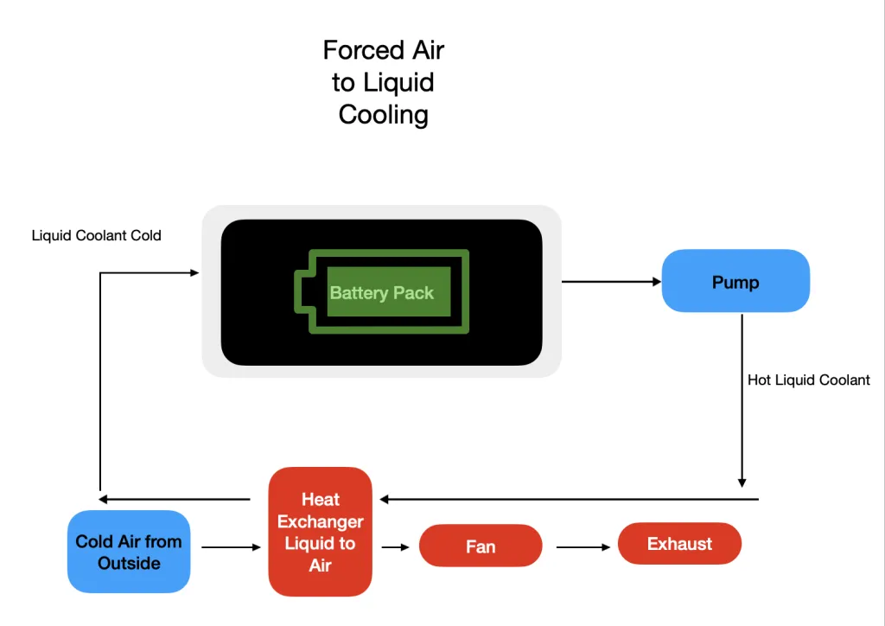
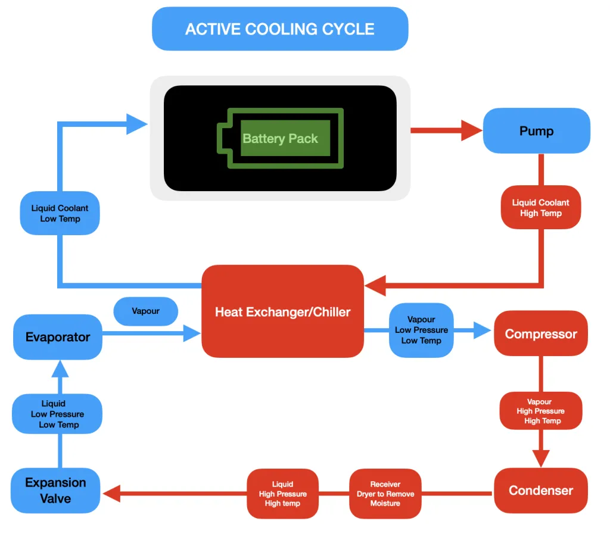
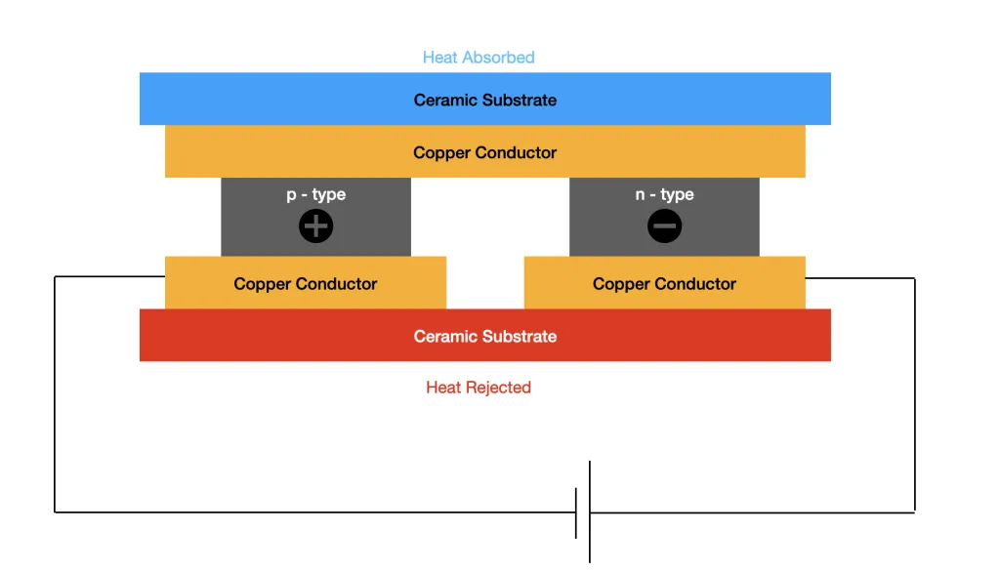
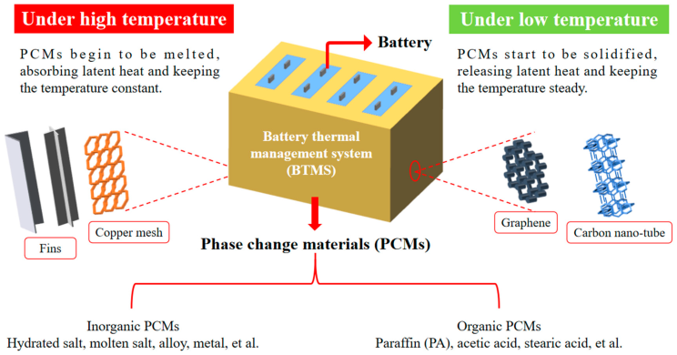
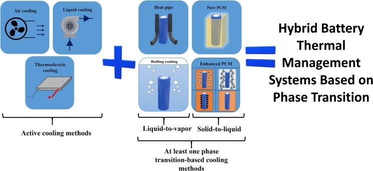
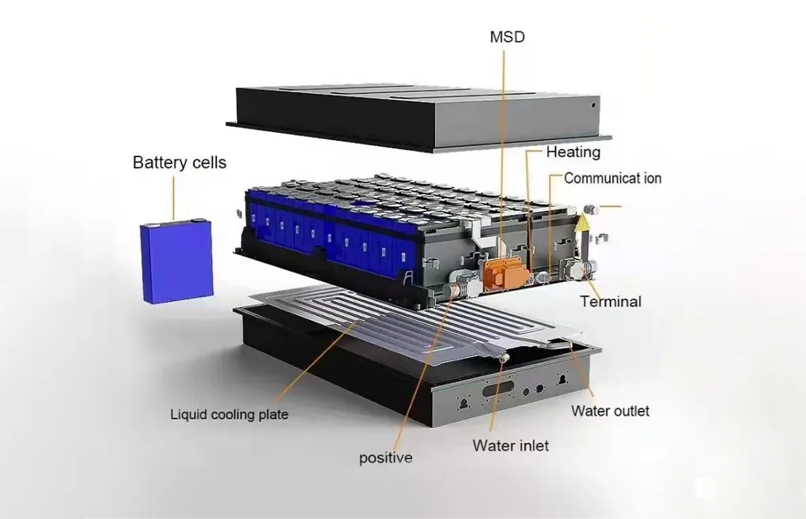
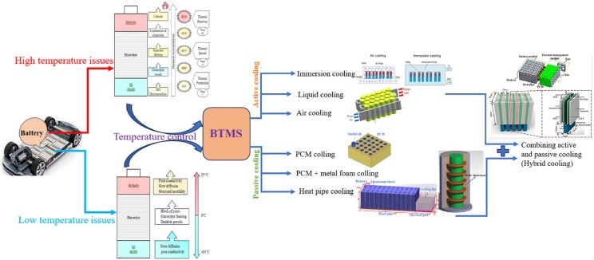
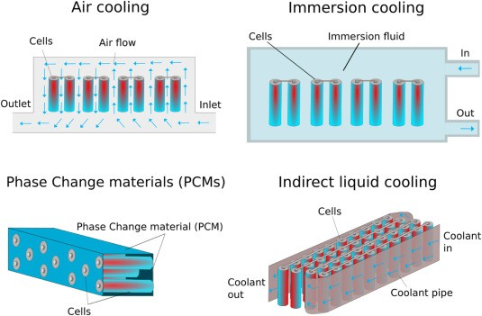

As the world increasingly shifts towards electrification and sustainable energy solutions, batteries have become indispensable for powering devices ranging from smartphones to electric vehicles (EVs). However, maintaining optimal battery performance and safety requires effective Battery Thermal Management Systems (BTMS). These systems regulate battery temperature to ensure efficiency, longevity, and safety across various applications.
Why Battery Thermal Management Matters
Batteries, particularly lithium-ion types, are sensitive to temperature fluctuations. Extreme heat can accelerate battery degradation and increase the risk of thermal runaway—a dangerous condition that can lead to fires or explosions. On the other hand, cold temperatures can reduce battery capacity and impair charging/discharging performance. BTMS addresses these challenges by maintaining an optimal temperature range during operation.
Exploring BTMS Technologies
Active Systems: Active BTMS utilize external energy sources, such as electricity to power pumps, fans, or thermoelectric devices, to actively control and manage the battery temperature. These systems generally offer higher thermal management capacity compared to passive methods.
- Forced Air Cooling: This method improves upon natural air cooling by using fans or blowers to actively force air across battery surfaces or through dedicated channels within the battery pack. The air used can be ambient air (passive source, active flow) or conditioned air from the vehicles HVAC system (active source, active flow).

- Liquid Cooling: This is a widely adopted active method, especially in high-performance applications like EVs. It involves circulating a liquid coolant through a closed loop system that makes thermal contact with the battery cells or modules. Common coolants include mixtures of water and ethylene glycol, mineral oil, or specialized dielectric fluids.

- Thermoelectric Cooling (TEC): TEC systems leverage the Peltier effect, where applying a DC voltage across a specialized semiconductor module creates a temperature difference between its two sides. The cold side is placed in thermal contact with the battery (or a heat spreader attached to it), effectively pumping heat to the hot side. This heat must then be dissipated from the hot side using conventional methods like heat sinks with fans or a liquid cooling loop.

Passive Systems: Passive BTMS operate without consuming external energy for the primary heat transfer process, relying instead on natural physical phenomena like conduction, convection, and radiation, or the latent heat of phase change.
- Natural Convection Air Cooling: This is the simplest form of passive cooling, utilizing the natural movement of ambient air to dissipate heat from the battery surfaces. Heat transfer is facilitated by designing the battery pack casing and cell arrangement to promote airflow.
- Phase Change Materials (PCMs): PCMs are substances engineered to undergo a phase transition (typically solid to liquid) at a specific temperature, absorbing a significant amount of latent heat in the process with minimal temperature change. When integrated into a battery pack, usually by filling the gaps between cells, PCMs absorb excess heat generated during operation, effectively buffering temperature spikes and improving temperature uniformity.

- Heat Pipes (HP): These are highly efficient passive heat transfer devices, often described as thermal superconductors due to their extremely high effective thermal conductivity. A heat pipe consists of a sealed container (usually a tube), a wick structure lining the inner wall, and a small amount of working fluid. Heat applied to one end (the evaporator section, placed near the battery) causes the working fluid to vaporize.
Hybrid Systems: Hybrid BTMS represent a growing area of development, seeking to optimize thermal management by combining two or more different techniques (active and/or passive). The goal is to leverage the advantages of each constituent technology while mitigating their individual drawbacks.

Anatomy of a BTMS: Key Components and Their Roles
A comprehensive Battery Thermal Management System, particularly active and hybrid types, comprises several key components working in concert to regulate battery temperature effectively.
Core Components (Common in Active/Hybrid Systems)
- Temperature Sensors: These are fundamental to any controlled BTMS. Placed strategically throughout the battery pack—on individual cells, modules, the overall pack surface, and within the coolant lines (inlet/outlet)—they provide real-time temperature data. This data is the critical feedback signal for the control system. The accuracy, responsiveness, and placement of these sensors are vital for the systems effectiveness in detecting hotspots and managing overall temperature. nbsp;
- Control Unit (Controller / ECU): Often integrated within the main Battery Management System (BMS) or acting as a dedicated module, the control unit serves as the brain of the BTMS. It receives input from the temperature sensors (and potentially other vehicle systems), processes this information using predefined control algorithms, and sends command signals to actuate various BTMS components like pumps, fans, valves, and heaters. Its sophistication determines the systems responsiveness and ability to optimize for efficiency and performance.
- Heat Exchangers: These devices are crucial for transferring heat out of the primary battery cooling loop. Common types include radiators (transferring heat from coolant to ambient air, often assisted by fans), chillers (using a refrigeration cycle to cool the battery coolant), and liquid-to-liquid heat exchangers (transferring heat to another vehicle coolant loop, e.g., the powertrain or HVAC system). In indirect liquid cooling systems, cold plates are a specialized form of heat exchanger integrated within the battery pack.
- Pumps (Liquid Systems) / Fans (Air Systems): These components provide the motive force to circulate the thermal medium (coolant or air) through the BTMS loop. Their speed is often modulated by the control unit to adjust the cooling or heating rate. Importantly, their operation consumes energy, contributing to the system's parasitic load.

- Coolant Fluids (Liquid Systems): The working fluid responsible for absorbing heat from the battery and transporting it to the heat exchanger. The choice of coolant is critical and depends on factors like thermal conductivity, specific heat capacity, viscosity (especially at low temperatures), freezing point, boiling point, electrical conductivity (dielectric fluids are needed for immersion), material compatibility, toxicity, flammability, and cost. Common examples include water mixed with ethylene glycol (WEG) for freeze protection, mineral oils, synthetic esters, and specialized dielectric fluids or refrigerants.
- Valves: Used in liquid and some complex air systems to direct the flow of the thermal medium. Solenoid or electronically controlled valves allow the control unit to open or close specific circuits, bypass components (like the radiator or chiller when heating is needed), or modulate flow rates. Multi-way valves (e.g., 3-way, 4-way valves as seen in Tesla systems) enable complex routing strategies for integrated thermal management involving multiple loops (battery, cabin, powertrain)
- Heaters: To provide heating in cold conditions, active BTMS often incorporate electric heaters, frequently Positive Temperature Coefficient (PTC) heaters, integrated into the coolant loop or sometimes as air heaters. These allow the system to bring the battery up to an efficient operating temperature or a safe charging temperature.
- Expansion Tank (Liquid Systems): A reservoir included in liquid cooling loops to accommodate the expansion and contraction of the coolant fluid as its temperature changes, maintaining appropriate system pressure.

Market Growth and Trends
The global BTMS market is witnessing rapid growth, driven by the increasing demand for EVs, renewable energy storage systems, and other battery-powered applications. Valued at $3.8 billion in 2024, the market is projected to grow at a compound annual growth rate (CAGR) of 14.3%, reaching $14.9 billion by 2034. Key drivers include advancements in cooling technologies, the electrification of transportation sectors, and the integration of renewable energy into grids.
Advancements in BTMS Technology
Advanced Cooling Techniques
Immersion Cooling (Direct Liquid Cooling): This approach, involving the direct submersion of battery cells and modules in a dielectric (electrically non-conductive) fluid, is gaining significant interest as a potential successor to indirect liquid cooling, especially for demanding applications. By eliminating the thermal resistance associated with cold plates and TIMs, immersion cooling offers significantly higher heat transfer coefficients.
Advanced Liquid Cooling Designs: Beyond immersion, research continues on optimizing indirect liquid cooling systems. This includes exploring novel cold plate designs (e.g., microchannel heat sinks, complex flow path geometries, bionic spiral fins) to enhance heat transfer surface area and improve flow distribution, aiming for better thermal performance and uniformity with potentially lower pressure drops and pumping power.

Novel Materials
Enhanced Phase Change Materials (PCMs): A major focus is overcoming the low thermal conductivity of traditional PCMs. This involves creating composite PCMs (CPCMs) by embedding materials with high thermal conductivity, such as expanded graphite (EG), carbon nanotubes (CNTs), graphene, metal foams, or metallic nanoparticles, into the PCM matrix. Nano-enhanced PCMs (NePCMs), incorporating nanoparticles like alumina or graphene oxide, aim to significantly boost thermal conductivity while minimizing the reduction in latent heat storage capacity.
Advanced Thermal Interface Materials (TIMs): Development continues on TIMs with higher thermal conductivity, better conformability to surfaces, long-term stability, and easier application methods to minimize thermal resistance at interfaces
Conclusion
Battery Thermal Management Systems are pivotal for ensuring the safe and efficient operation of modern batteries. As technology advances, innovative materials like NEPCMs and sophisticated software modeling tools promise to make BTMS more effective while addressing current limitations. With the global push towards electrification, these systems will play an increasingly vital role in shaping the future of energy storage solutions across industries.